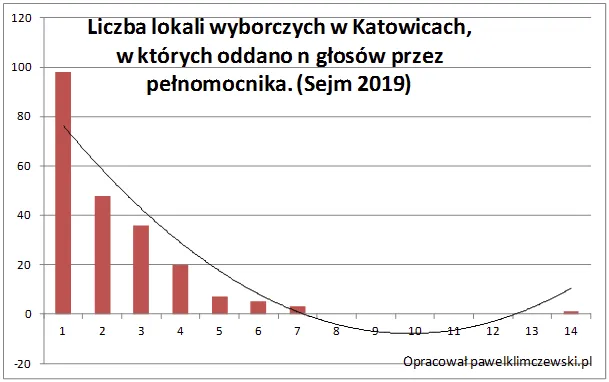
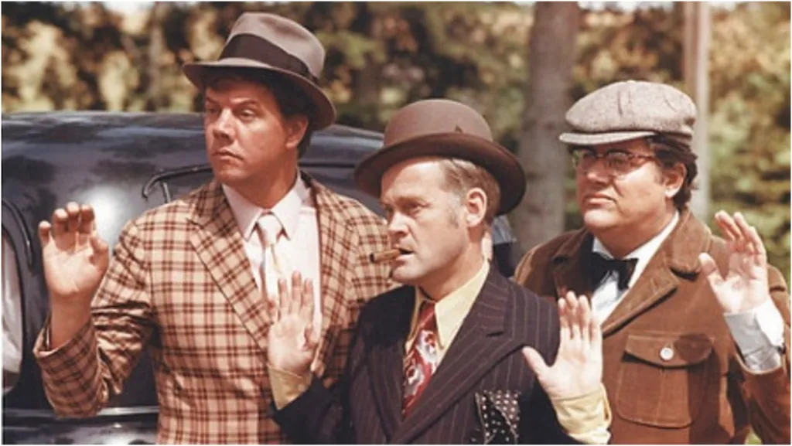

Krótko o sile statystyki, czyli łapanie oszustów kalkulatorem.
Powtarzany frazes o tym, że statystyka jest największym kłamstwem jest bardzo nietrafiony. Jako dzieci nie uczymy się statystyki za dużo, na studiach jest zmorą. Władza natomiast myśli wyłącznie statystycznie. Puszcza okropne komunikaty o zagrożeniach ze wszystkich stron do chwili, gdy istotna większość ludzi nie chce juz niczego dla siebie, tylko "świętego spokoju". Nie chcą już powrotu do niższego VAT-u podniesionego "na rok" w 2011 roku. Nie protestują z powodu wielkiej inflacji wywołanej jedynie dodrukiem pustego pieniądza. Nie chcą już wielu swych praw, "żeby tylko wojny nie było, niech żond robi, co chce!" I rząd robi, co chce.
Na szczęście są też momenty, gdy my sprawdzamy władzę. Sprawdziłem w bazie danych z wyborów do Sejmu wiele zmiennych. Dziś krótko o jednej komisji wyborczej w Katowicach.
W polskich wyborach można złożyć swój los przez pełnomocnika, takie pełnomocnictwo musi być poświadczone i jest to praktyka bardzo rzadka. Na blisko pół miliona głosów oddanych w Katowicach tego typu głosów było niespełna 500, więc jeden promil. Na 400 komisji wyborczych na tym terenie 218 komisji miało takie głosy, jedne komisje po sztuce, inne po kilka, a jeszcze inne po więcej. Jak było pokazuje wykres.

W blisko stu komisjach było po jednym takim głosie, w ponad 40 komisjach po dwa takie głosy, itd. W jednej takich głosów było 14. Czy to dużo? W realnym świecie funkcja powinna być wykładnicza a nie wielomianowa jak miało to miejsce w tej komisji i na wykresie.

Oczywiście jest to możliwe, ale statystyka mówi, że bardzo, bardzo mało prawdopodobne. A gdyby się powtórzyło, to będzie trzeba zrobić wywiad do prasy z członkami tej wyjątkowej, szczęśliwej komisji.
Zachęcam do uczestnictwa w komisjach wyborczych, każdy może się zgłosić i jeszcze za to płacą! To tylko jeden dzień, ale dla Polski i każdego z nas będzie to dzień wyjątkowy. Warto, szczególnie w Katowicach i okolicy ;) Wszechświat zachwyca swym pięknem, matematycy mają tego zachwytu dwa razy więcej, bo funkcje opisujące Kosmos i naszą egzystencję są piękne. Gdy ktoś je zniekształca zaraz to statystyk wykryje!
Paweł Klimczewski